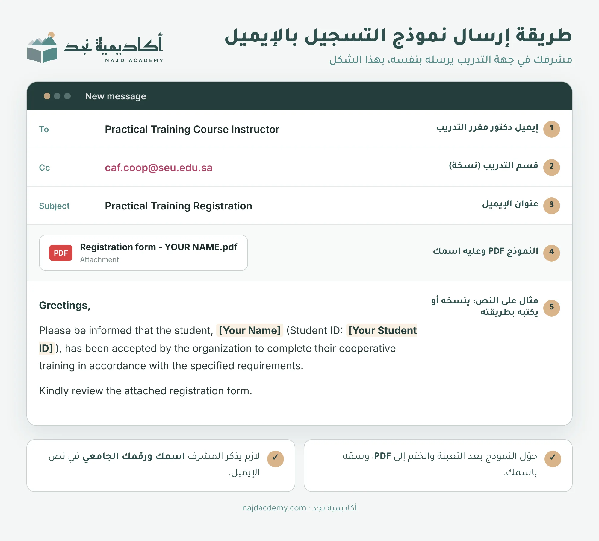
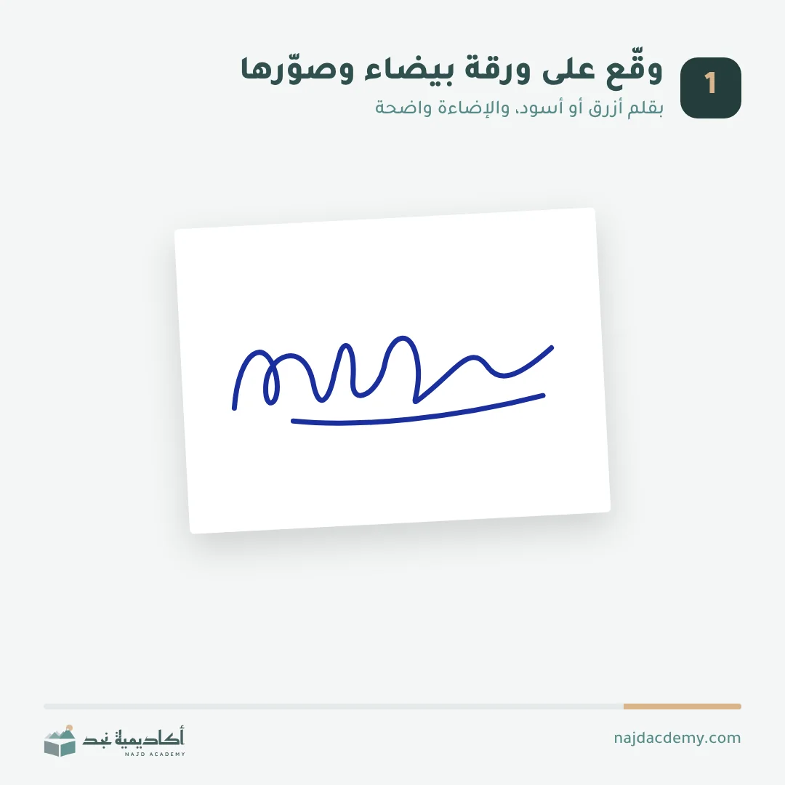
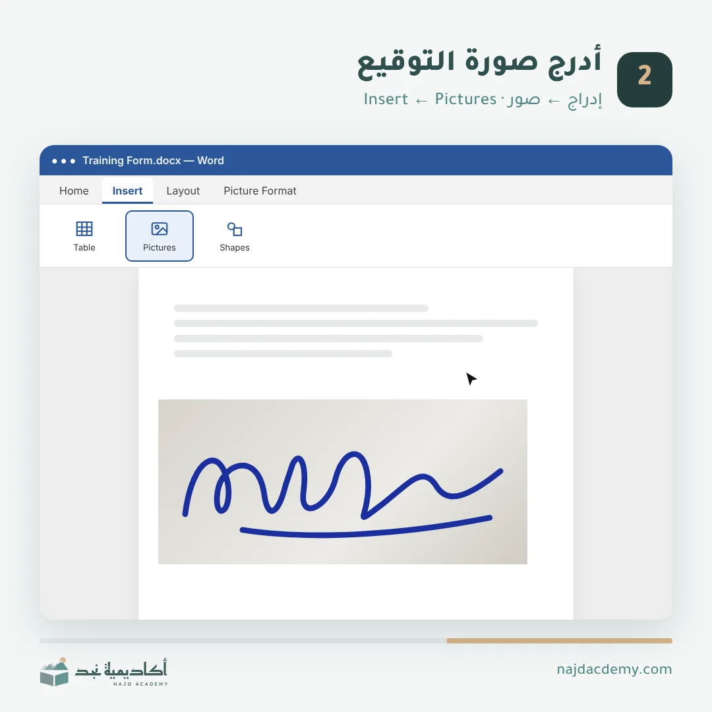
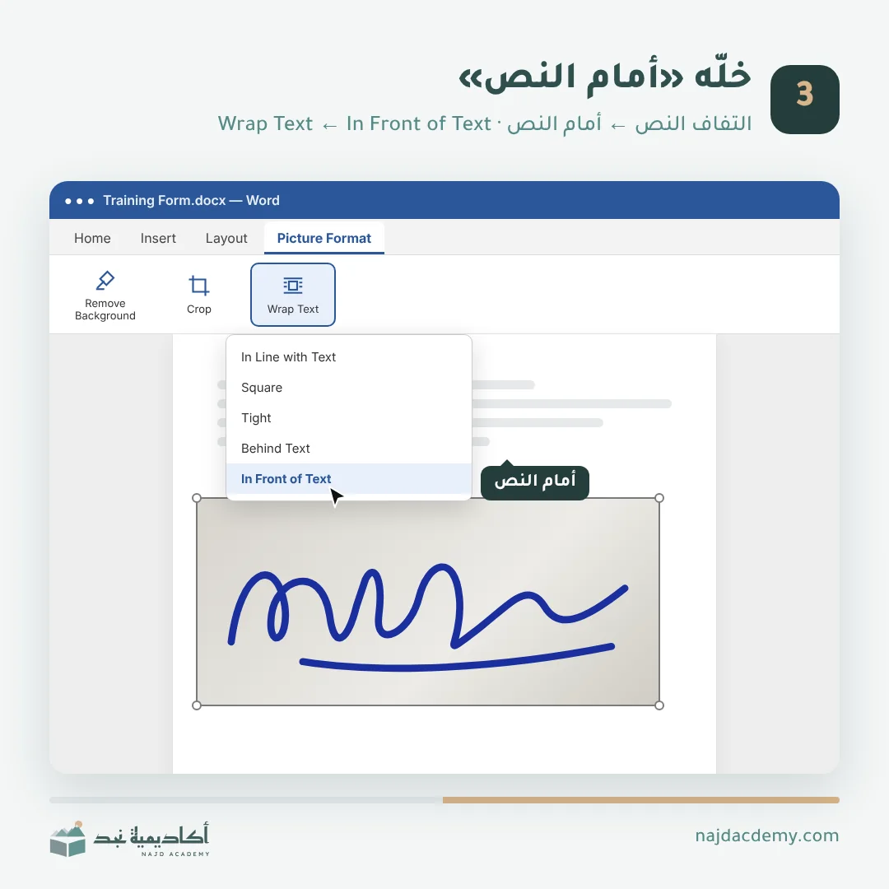
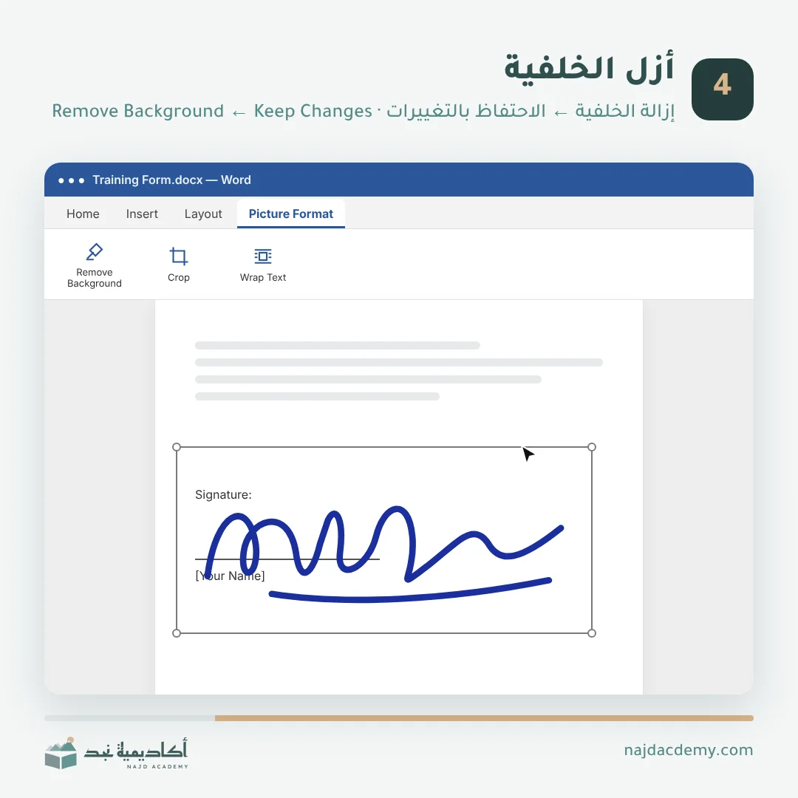
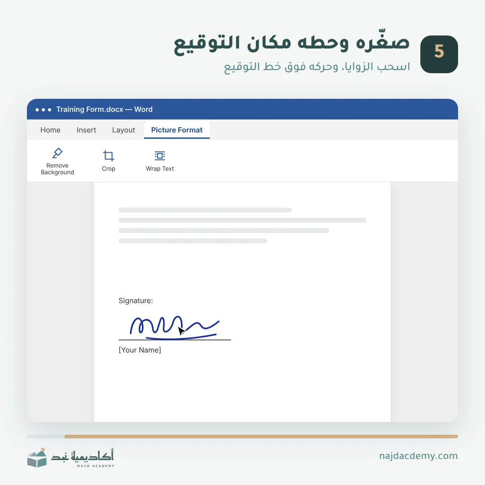

نجمع الإعلانات من مصادرها الرسمية. تأكد من التفاصيل من رابط التقديم قبل ما تقدم.
نبذة عن التدريب التعاوني
يمنح التدريب التعاوني الطالب فرصة التعامل مع بيئة عمل حقيقية. والمقرر عبارة عن ورشة عمل تعليمية بين الطالب وعضو هيئة التدريس والمشرف في جهة التدريب، ويغطي المخرجات التعليمية اللي يحددها نموذج التدريب العملي واتفاقية التدريب الموقّعة بين الجامعة وجهة التدريب.
يتابع المشرف الأكاديمي تدريبك ميدانيًا بلقاءات دورية، وينتهي التدريب بتقرير تكتبه وفق نموذج محدد، تعرض فيه الأعمال اللي سويتها والمخرجات اللي حققتها.
خطوات التدريب التعاوني من البداية للنهاية
من اختيار جهة التدريب إلى تسليم التقرير النهائي والعرض. علّم على كل خطوة تخلصها، ويحفظ تقدمك في جهازك.
المرحلة الأولىالتجهيز والتسجيل
اختيار جهة التدريب
دوّر على شركة أو جهة توافق تدرّبك خلال فترة التدريب المحددة.
تسجيل المقرر
سجّل مقرر التدريب التعاوني الخاص بتخصصك. رمز المقرر لكل تخصص:
نموذج التسجيل
- بعد ما توافق الجهة على تدريبك، عبّ النموذج مع مشرفك في الجهة.
- لازم يكون عليه ختم الجهة وتوقيعها.
- بعدها يرسل المشرف النموذج بالإيميل (الخطوة 4).
إرسال النموذج بالإيميل
مشرفك في الجهة هو اللي يرسل الإيميل، مو أنت.
- To: إيميل دكتور مقرر التدريب.
- Cc: caf.coop@seu.edu.sa (قسم التدريب).
- المرفق: النموذج بصيغة PDF، واسم الملف فيه اسمك.
- النص: تحت مثال على الإيميل. يقدر ينسخه أو يكتبه بطريقته، المهم يذكر فيه اسمك ورقمك الجامعي.

اضغط على الصورة عشان تكبّرها
Subject: Practical Training Registration
Greetings, Please be informed that the student, [Your Name] (Student ID: [Your Student ID]), has been accepted by the organization to complete their cooperative training in accordance with the specified requirements. Kindly review the attached registration form.
الرفع على البلاك بورد
ارفع نفس النموذج بنفسك على Blackboard.
التوقيع الإلكتروني (اختياري)
إذا تبي تعبي النموذج على الكمبيوتر بدل خط اليد، حوّل توقيعك لصورة وحطه في النموذج. الفيديو يشرح الطريقة في Word.





✓ بإنهاء هذي الخطوات تكون خلصت تقريبًا نص صعوبة المقرر.
المرحلة الثانيةالتقارير والتقييم
التقرير الدوري الأول
تكتب فيه المهام اللي أنجزتها في تدريبك خلال الفترة. تسلّمه في الموعد اللي يحدده مشرفك الأكاديمي، وعادة كل 3 إلى 4 أسابيع.
مجموعها 3 تقارير خلال فترة التدريب.
التقرير الدوري الثاني
نفس نموذج التقرير الأول. غيّر التواريخ ورقم التقرير، وسلّمه في موعده.
التقرير الدوري الثالث
نفس نموذج التقرير الأول. غيّر التواريخ ورقم التقرير، وسلّمه في موعده.
التقرير النهائي والعرض التقديمي
ابدأ فيه بدري، لا تنتظر الموعد النهائي.
- التقرير النهائي: اتبع المتطلبات المكتوبة في Final Report Guidelines.
- العرض التقديمي: اتبع Presentation Guidelines وتعليمات مشرفك الأكاديمي، لأنه عادة يحدد النقاط المطلوبة وعدد الشرائح.
نماذج التقارير حسب التخصص:
نماذج التقييم
- Form 1: تقييم المتدرب لجهة التدريب
- يرسله لك المشرف الأكاديمي، تعبّيه أنت وترجعه له. فيه تقييمك لجهة التدريب، ويعتبر توصية منك للجامعة عنها.
- Form 2: تقييم المتدرب لبرنامج التدريب
- يرسله لك المشرف الأكاديمي، تعبّيه أنت وترجعه له. فيه تقييمك لتجربة التدريب بشكل عام، وهل استفدت منها.
- Form 4: تقييم المشرف الميداني للمتدرب
- يرسله المشرف الأكاديمي لك أو لمشرفك في الجهة مباشرة، حسب الدكتور. ويعبّيه مشرفك في الجهة فقط، ويرسله للمشرف الأكاديمي بدون تدخل منك.
الدرجاتتوزيع درجات المقرر
المواعيد تختلف كل فصل، ويحددها الدكتور في خطة المقرر.
عندك سؤال عن التدريب؟
اسأل في قروب التدريب التعاوني.